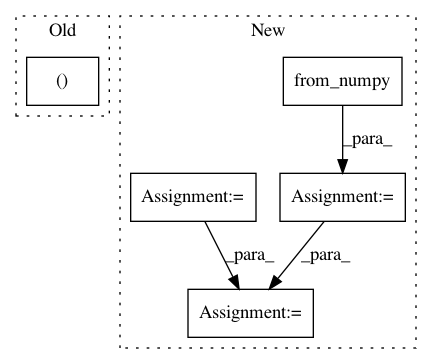

2eb4c5f77bd8da9b1e23851b0acb84543e442953,python/baseline/pytorch/classify/model.py,WordClassifierModelBase,make_input,#WordClassifierModelBase#Any#,61
Before Change
if y is not None:
y = y.cuda()
return x, xch, lengths, y
def forward(self, input):
// BxTxC
After Change
:param do_dropout: (``bool``) Should we do dropout. Defaults to False
:return:
example_dict = dict({})
for key in self.embeddings.keys():
example_dict[key] = torch.from_numpy(batch_dict[key])
if self.gpu:
example_dict[key] = example_dict[key].cuda()
// Allow us to track a length, which is needed for BLSTMs
if self.lengths_key is not None:
example_dict["lengths"] = torch.from_numpy(batch_dict[self.lengths_key])
In pattern: SUPERPATTERN
Frequency: 4
Non-data size: 5
Instances
Project Name: dpressel/mead-baseline
Commit Name: 2eb4c5f77bd8da9b1e23851b0acb84543e442953
Time: 2018-09-24
Author: dpressel@gmail.com
File Name: python/baseline/pytorch/classify/model.py
Class Name: WordClassifierModelBase
Method Name: make_input
Project Name: open-mmlab/mmdetection
Commit Name: ef58bc62d3b5ee992b37e9277a7aa7701d8c1757
Time: 2020-02-12
Author: xvjiarui0826@gmail.com
File Name: mmdet/ops/nms/nms_wrapper.py
Class Name:
Method Name: soft_nms
Project Name: kengz/SLM-Lab
Commit Name: 4df11055e61fa6c9fede6b2114c8ce05de9a035e
Time: 2017-12-08
Author: lgraesser@users.noreply.github.com
File Name: slm_lab/agent/algorithm/dqn.py
Class Name: DQNBase
Method Name: compute_q_target_values
Project Name: hassony2/kinetics_i3d_pytorch
Commit Name: 1f3da600c20e3376b0bb396bba482b1e90b7883c
Time: 2017-11-24
Author: yana.hasson@inria.fr
File Name: i3nception_tf.py
Class Name:
Method Name: